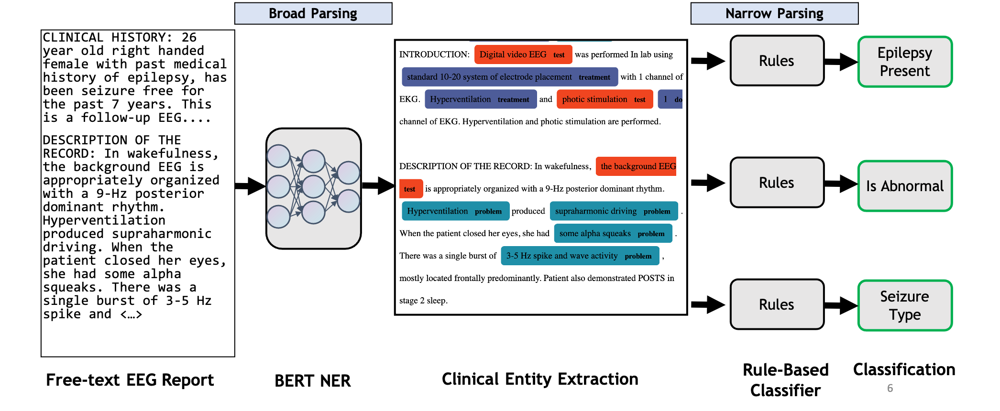

Research
I have been researching in the Clinical Natural Language Processing (NLP) space for the past 7 years. The overarching theme of my work is semantic parsing of clinical data (like Electronic Medical Records) to extract information that can be used to make actionable decisions for healthcare delivery and contribute to downstream research work.
- At Arizona State (2014-20), I worked under Dr. Chitta Baral in the Cognition and Intelligence Lab throughout my BS and MS, where I collaborated with organizations like the Mayo Clinic
- At the University of Illinois (2020-24) as a medical student, I am currently working under Dr. Yoga Varatharajah on semantic processing of EEG-related medical notes.
üåµ In addition to papers, I publish Clinical AI software at cactiML.com. My overall goals are to:
-
Build Clinical AI software which
- Makes information deep within medical records more accessible: semantically filter, search, and extract clinical information from medical data like Electronic Medical Records
- Is generalizable: can be applied across a range of clinical tasks without significant task-specific training
- Develop packages, models, and tools that can be used as building blocks for further downstream clinical research and development
Below are a few of the projects I've worked on. There are also more details on Google Scholar, my resume, or LinkedIn.
Selected Works
Full work on Google Scholar.SCORE-IT: A Machine Learning-based Tool for Automatic Standardization of EEG Reports
S Rawal, Y Varatharajah. 2021 IEEE Signal Processing in Medicine and Biology Symposium (SPMB).
In this work, we propose a machine learning-based system that automatically extracts components from the SCORE specification from unstructured, natural-language EEG reports. Specifically, our system identifies (1) the type of seizure that was observed in the recording, per physician impression; (2) whether the session recording was normal or abnormal according to physician impression; (3) whether the patient was diagnosed with epilepsy or not.
üèÜ Best Paper Award at 2021 IEEE Signal Processing in Medicine and Biology Symposium (SPMB).

Evaluating Latent Space Robustness and Uncertainty of EEG-ML Models under Realistic Distribution Shifts
N. Wagh, J. Wei, S. Rawal, B. M. Berry, Y. Varatharajah. Conference on Neural Information Processing Systems (NeurIPS) 2022.
Abstract: The recent availability of large datasets in bio-medicine has inspired the development of representation learning methods for multiple healthcare applications. Despite advances in predictive performance, the clinical utility of such methods is limited when exposed to real-world data. This study develops model diagnostic measures to detect potential pitfalls before deployment without assuming access to external data. Specifically, we focus on modeling realistic data shifts in electrophysiological signals (EEGs) via data transforms and extend the conventional task-based evaluations with analyses of a) the model's latent space and b) predictive uncertainty under these transforms. We conduct experiments on multiple EEG feature encoders and two clinically relevant downstream tasks using publicly available large-scale clinical EEGs. Within this experimental setting, our results suggest that measures of latent space integrity and model uncertainty under the proposed data shifts may help anticipate performance degradation during deployment.
PDF on OpenReview via NeurIPS 2022
Multi-Perspective Biomedical Semantic Question-Answering (MS Thesis)
This work introduces the concept of a Multi-Perspective IR system, a novel methodology that combines multiple Transformers-based deep learning and traditional IR models to better predict the relevance of a query-sentence pair, along with a standardized framework for tuning this system.
Given a query in natural language, search across 29 million PubMed abstracts and identify top n candidate sentences that answer the query. To better "understand" and rank candidates, a weighted "Multi-Perspective" approach, utilizing three BERT models trained on different tasks, is taken.

Developing and Using Special-Purpose Lexicons for Cohort Selection from Clinical Notes
S. Rawal, A. Prakash, S. Adhya, S. Kulkarni, S. Anwar, C. Baral, M. Devarakonda. 2018 National NLP Clinical Challenges shared tasks.
Selecting cohorts for a clinical trial requires costly and time-consuming manual chart reviews resulting in poor participation. From natural-language patient medical records, our system classifies whether a patient is within or outside 13 clinical trial cohorts (i.e. alcohol abuse, drug abuse, MI within past 6 months, advanced coronary artery disease).
Part of the n2c2 2018 Challenge – ranked #1 out of 47 teams.
Prescription Information Extraction from Electronic Health Records (BS Thesis)
Bidirectional LSTM + CRF neural architecture for Named Entity Recognition applied to the i2b2 2009 Medication Information extraction challenge.